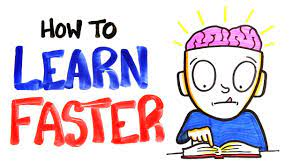

1) Take notes with pen and paper........................................................................................................................................................How do I know what type of learner I am?
2) Have effective note-taking skills.......................................................................................................................................1)Use index cards to learn new words; read them out loud.
3) Distributed practice............................................................................................................................................2)Have test questions read to you by a friend or family member.
4) Study, sleep, more study..............................................................................................................................................3)Write down key words, ideas, or instructions.
5) Modify your practice..............................................................................................................................................4)Record yourself and then listen to the recording.
6)Try a mnemonic device
7) Use brain breaks to restore focus
8) Stay hydrated
9) Learn information in multiple Ways
10) Connect what you learn with something you know
